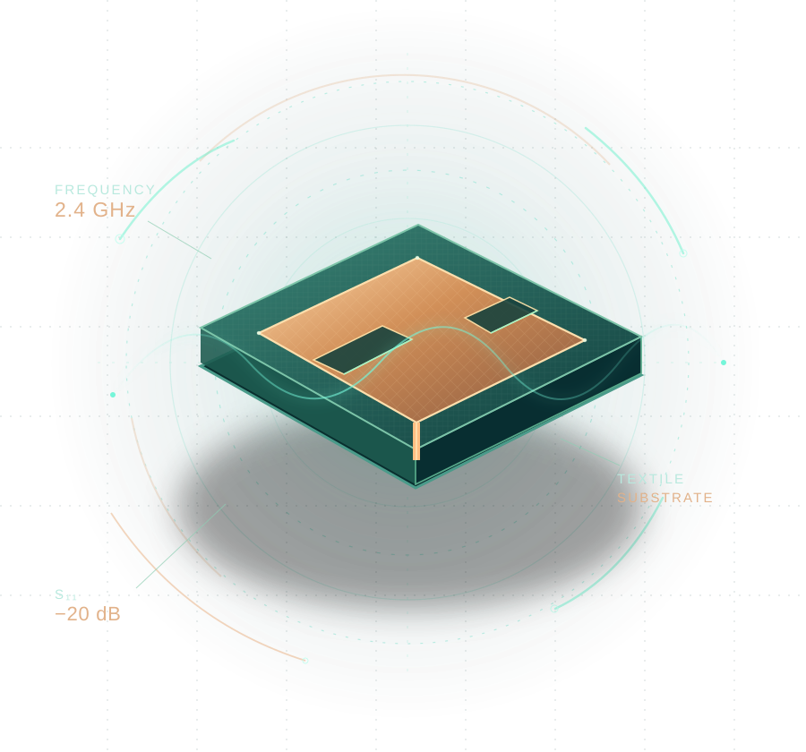

Explore how patch geometry, fabric substrates and operating frequency shape the response of a wearable antenna. An interactive companion to the paper’s ant-colony optimized support vector regression research.

The GCITC paper studies patch geometry, operating frequency and antenna performance using ant-colony optimized support vector regression. This companion brings its central models, textile design equations and numerical evidence into one explorable research atlas.
Patch and slot dimensions define eight antenna geometries. Their recorded frequency sweeps reveal the features behind their distinct resonant responses.
A colony-inspired search selects the Gaussian support vector regressor, connecting antenna geometry and operating frequency to measured signal strength.
Spectral refinement follows resonant detail between observations, while frequency-marginal modeling describes the range of responses when frequency is unspecified.
D. Raghavan · B. Sujatha · Chinmayi B. S. · Bhavana B. Rao · John Kiran
DOI: 10.1109/GCITC60406.2023.10425975Choose an antenna configuration and model. Copper traces show the observed response; mint markers show independently held-out predictions.
Geometry determines how the antenna responds across frequency. The support vector regressor learns the feature-response relation; the extension uses locally observed spectra to sharpen interpolation.
MAE · dB, held-out frequencies
Frequency points in the test partition are never used to fit their predictors. The same antenna geometries are represented in training.
Conventional error measures on a fixed, frequency-stratified held-out subset of the recorded antenna sweeps.
Independently trained ACO–SVR. The held-out partition is declared in the supplement and is not asserted to match the paper’s evaluation population. All four scores are computed from the same test residuals.
Twelve regression families, each trained without published score constraints. Columns 2–5 are independently measured; columns 6–9 reproduce the printed reference table.
| Regressor | MSE | RMSE | MAE | R² | Paper MSE | Paper RMSE | Paper MAE | Paper R² |
|---|
A resonant antenna rarely responds in straight lines. Local spectral correction resolves the fine structure of frequency sweeps for antenna geometries already represented during training.
Compared with 0.146 for ACO–SVR alone on the same held-out frequencies.
Prediction on known geometries only; no claims of equally strong new-geometry performance.
Inner validation selects the spectral interpolator without using the paper’s reported endpoints.
The ACO–SVR model is the primary paper-facing comparison. Spectral refinement is evaluated separately on withheld frequencies of characterized geometries.
The rectangular microstrip relations in the paper link operating frequency, dielectric constant, patch dimensions, and the ground plane.
The original paper uses a rectangular patch approximation with effective permittivity and fringing-length corrections. Explore the influence of substrate and resonance.
Analytical geometry only. These equations do not independently establish full-wave gain, return loss or body-tissue response.
Source-reported HFSS gains for the four textile and body-tissue conditions, shown as archival simulation values rather than new full-wave results.
Source: Table III of the research paper, at 2.4 GHz. Table IV additionally reports cotton ACO–SVR/HFSS gain of 10 / 9.6 dBi and S₁₁ of −19.7 / −20 dB.
A geometry alone cannot determine which point on its frequency sweep is being sampled. The frequency-marginal estimator instead predicts a distribution over the observed band.
Distributional scores compare response quantiles and are not interchangeable with pointwise MAE, RMSE or R².
The supplementary methods document develops the training objective, kernel formulation, spectral correction, validation design and frequency-marginal model. It records the precise evaluation definitions alongside the results.
The original GCITC article, fully specified computational methods, antenna response data and reproducible estimates belong to one connected research resource.